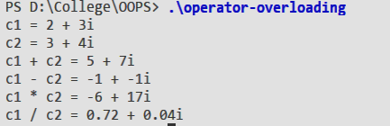

Write a program to add, subtract, multiply and divide two complex number using Operator Overloading .
Operator overloading is an important concept in C++. It is a type of polymorphism in which an operator is overloaded to give user defined meaning to it. Overloaded operator is used to perform operation on
user-defined data type. For example, ‘+’ operator can be overloaded to perform addition on various data types, like for Integer, String(concatenation) etc.
Almost any operator can be overloaded in C++. However, there are few operator which can not be overloaded. Operator that are not overloaded are follows
::
.
*
?:
data_type classname :: operator symbol (arguments){
//function body
}
#include <iostream>
using namespace std;
class Complex {
float real ;
float imag ;
public :
Complex () {
real = 0 ;
imag = 0 ;
}
Complex (float x , float y) {
real = x ;
imag = y ;
}
void display(){
cout << real << " + " << imag << "i" << endl ;
}
Complex operator + ( Complex x) {
return Complex( real + x.real , imag + x.imag );
}
Complex operator - ( Complex x) {
return Complex( real - x.real , imag - x.imag );
}
Complex operator * ( Complex x) {
return Complex( real * x.real - imag * x.imag , real * x.imag + imag * x.real );
}
Complex operator / ( Complex x) {
return Complex( (real * x.real + imag * x.imag) / ( x.real * x.real + x.imag * x.imag ) ,
(imag * x.real - real * x.imag) / ( x.real * x.real + x.imag * x.imag ) ) ;
}
} ;
int main(){
Complex c1(2.0 , 3.0 ) , c2(3.0 , 4.0) , c3 ;
cout << "c1 = " ;
c1.display();
cout << "c2 = " ;
c2.display();
cout << "c1 + c2 = " ;
c3 = c1 + c2 ;
c3.display();
cout << "c1 - c2 = " ;
c3 = c1 - c2 ;
c3.display();
cout << "c1 * c2 = " ;
c3 = c1 * c2 ;
c3.display();
cout << "c1 / c2 = " ;
c3 = c1 / c2 ;
c3.display();
return 0 ;
}

In the above program we created a class complex which is used for carrying operation on complex numbers like addition, subtraction, multiplication and division with the help of operator overloading.
Operator overloading refers to operator polymorphism. For example, + operator can be used to add two number but also can be used to add two strings together. So similar above we overload +, -, *, / with each operator represents its respective operation on complex numbers operators for two complex numbers.
::
.
*
?: